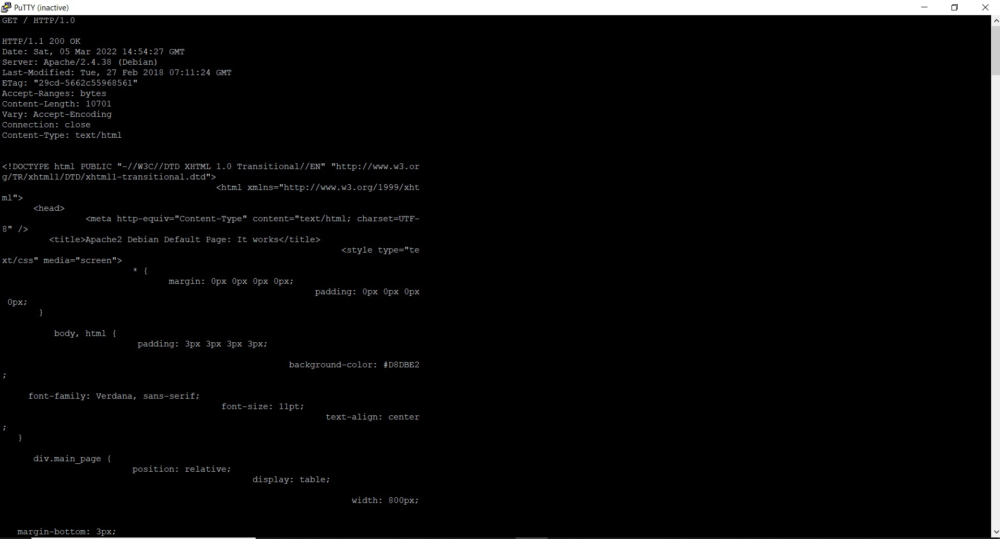
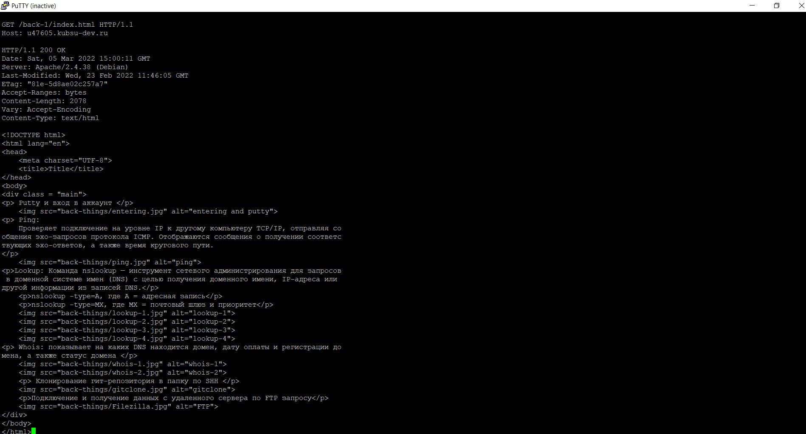
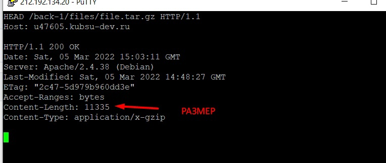
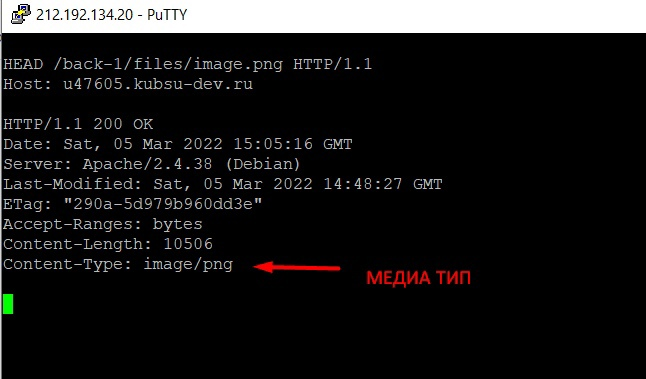
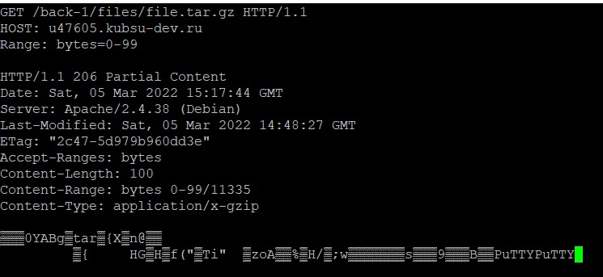
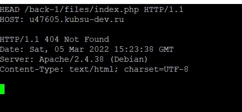

Получение html кода главной страницы при помощи GET запроса
Получение html кода внутренней страницы при помощи GET запроса
При помощи запроса HEAD получаем сведения о странице, поле content-length отображает количества символов в байтах
При помощи запроса HEAD получаем сведения о странице, поле content-type отображает медиатип ресурса
При помощи запроса POST отправляем коментарий на сервер по адресу, указывается стандартный тип данных и длинна контента в байтах

При помощи запроса GET и указанием промежутка получаем первые сто байтов файла
При помщи запрсоса HEAD можно узнать кодировку html файла, в данном случае UTF-8
